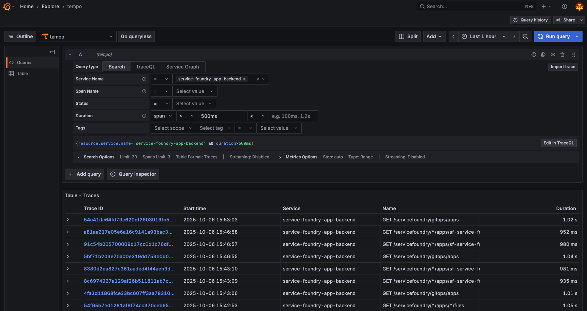
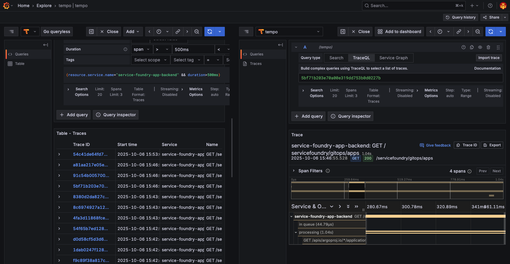

As for Go applications and any other compiled applications, OpenTelemetry auto-instrumentation is not available. In this example, we will use the service-foundry-app-backend application, which is a Go application without OpenTelemetry auto-instrumentation support.
service-foundry-app-backend application is installed in a bootstrap way with using Helm chart, and it is not using OBI sidecar by default.
values.yaml for Helm chart
# omitting other configurations for brevity
obiContainer:
enabled: false
image: otel/ebpf-instrument:main
securityContext: # Privileges are required to install the eBPF probes
privileged: true
env:
# The internal port of the application container
- name: OTEL_EBPF_OPEN_PORT
value: '8080'
- name: OTEL_EXPORTER_OTLP_ENDPOINT
value: 'http://otel-collector.o11y.svc.cluster.local:4318'
# required if you want kubernetes metadata decoration
- name: OTEL_EBPF_KUBE_METADATA_ENABLE
value: 'true'
- name: OTEL_SERVICE_NAME
value: "service-foundry-app-backend"
Users can enable OBI sidecar container by setting the obiContainer.enabled field to true in the custom values.yaml file, and override other configurations as needed.
templates/deployment.yaml (snippet)
spec:
template:
spec:
{{- if .Values.obiContainer.enabled }}
shareProcessNamespace: true
{{- end }}
# omitting other configurations for brevity
{{- if .Values.obiContainer.enabled -}}
{{- with .Values.obiContainer }}
- name: obi
image: {{ .image }}
securityContext:
{{- toYaml .securityContext | nindent 12 }}
env:
{{- toYaml .env | nindent 12 }}
{{- end }}
{{- end }}
Deploy service-foundry-app-backend with OBI sidecar
Like any other Application in Service Foundry, you can update the custom values.yaml file in Service Foundry UI, and redeploy the application.
Figure 5. Console - Update custom values.yaml
Set obiContainer.enabled to true in the custom values.yaml file.
custom-values.yaml
# omitting other configurations for brevity
obiContainer:
enabled: true
And click the Publish button to push the changes to Git repository, and then Argo CD will redeploy the application with OBI sidecar container.
Now obi container is running in the same pod as the service-foundry-app-backend application.
Figure 6. Obi sidecar container in the same pod
View traces in Grafana Tempo
Go to Explore in Grafana, and select the Tempo data source. You can see the traces based on the traffic to the service-foundry-app-backend application.

Figure 7. Grafana Tempo - service-foundry-app-backend with OBI
You can filter the traces by the service name and duration.
Service name: service-foundry-app-backend
Duration: span > 500ms
I want to see the traces with duration greater than 500ms.
If clicking a trace, you can see the details of the trace.

Figure 8. Grafana Tempo - Trace details